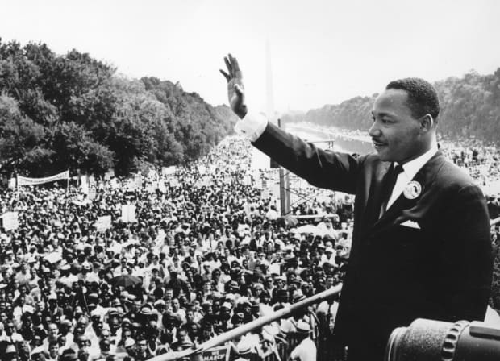

A civil rights legend who led the movement to end segregation and counter prejudice in the United States through
the means of peaceful protest.

Dr. Martin Luther King Jr. waves at protesters during his "I have a dream" speech.
Here's a timeline of Dr. King's Life:
1929 - Born in Atlanta, Georgia.
1944 - King begins his freshman year at Morehouse College in Atlanta, GA.
Feb. 1948 - King is ordained and appointed assistant pastor at Ebenezer Baptist Church in
Atlanta.
June 1948 - King receives his bachelor of arts degree in sociology from Morehouse College.
Sept. 1948 - King begins his studies at Crozer Theological Seminary in Chester, Pennsylvania.
May 1951 - King graduates from Crozer with a bachelor of divinity degree, delivering the
valedictory address at commencement.
Sept. 1951 - King begins his graduate studies in systematic theology at Boston University.
1953 - King and Coretta Scott are married at the Scott home near Marion, Alabama.
1954 - King begins his pastorate at Dexter Avenue Baptist Church in Montgomery, Alabama.
June 1955 - King is awarded his doctorate in systematic theology from Boston University.
Nov. 1955 - Yolanda Denise King, the Kings’ first child, is born.
Dec. 1955 - At a mass meeting at Holt Street Baptist Church, the Montgomery Improvement
Association (MIA) is formed. King becomes its president.
1957 - King appears on the cover of Time magazine.
Oct. 1957 - Coretta King gives birth to their second child, Martin, III.
June 1958 - King and other civil rights leaders meet with President Dwight D. Eisenhower in
Washington.
Sept. 1958 - King’s first book Stride Toward Freedom: The Montgomery Story is published.
Jan. 1961 - Dexter Scott, King’s third child, is born.
1962 - King is arrested at an Albany, Georgia prayer vigil and jailed. After spending two weeks
in jail, King is released.
March 1963 - Bernice Albertine, King’s fourth child, is born.
June 1963 - Strength to Love, King's book of sermons, is published.
Aug. 1963 - King delivers his "I Have a Dream" speech.
Jan. 1964 - King is named "Man of the Year" by Time Magazine.
Dec. 1964 - King receives the Nobel Peace Prize at a ceremony in Oslo, Norway. He declares that
"every penny" of the $54,000 award will be used in the ongoing civil rights struggle.
April 3, 1968 - King returns to Memphis, determined to lead a peaceful march. During an evening
rally at Mason Temple in Memphis, King delivers his final speech, "I’ve Been to the Mountaintop."
April 4, 1968 -
King is shot and killed while standing on the balcony of the Lorraine Motel in Memphis.
"Injustice anywhere is a threat to justice everywhere. We are
caught in an inescapable network of mutuality, tied in a single garment of destiny. Whatever affects one directly,
affects all indirectly."
- Dr. Martin Luther King Jr.
If you have time, you should read more about this incredible human being on his Wikipedia entry.